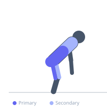
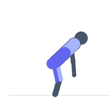

Exercise guide / Rack Pull Below Knee
Rack Pull Below Knee
The below-knee rack pull sets the safety pins slightly below the knee, training a range of motion that closely mirrors the full deadlift while allowing for a modest load increase and removing the floor-contact phase. It addresses the mid-shin to lockout portion of the pull and is used to build strength through the zone where the bar passes the knee — the first major sticking point for most lifters. The hamstring and glute demand is high throughout.
Primary muscles
erector spinae
gluteus maximus
hamstrings
Secondary muscles
quadriceps
latissimus dorsi
trapezius upper
Stabilizers
flexor carpi radialis
transverse abdominis
Equipment
Standard Barbell
Power Rack (Squat Cage)
Optional
Lifting Straps


Starting position
- Set the safety pins of a power rack just below the knee. Load the bar on the pins. This setup closely resembles a conventional deadlift starting position, but with less initial knee flexion required.
Setup
- Loads are typically 5-15% above conventional deadlift training max. Treat the setup as a deadlift, not a lockout exercise.
Steps
- Step 1: Set up behind the bar with pins just below knee height.
- Step 2: Take a conventional deadlift stance and grip.
- Step 3: Brace the core, retract the lats, and create tension without yanking.
- Step 4: Drive through the floor and push the hips through to lockout.
- Step 5: Return the bar to the pins under control.
Coaching cues
- Don't yank off the pins — build tension
- Same as a deadlift, just shorter
- Full hip extension at lockout
Breathing
- Full brace before each rep. Exhale at lockout.
Range of motion
- From just below the knee to full lockout — a range similar to the top two-thirds of a conventional deadlift.
Tempo
- 1-1-2-0
Common mistakes
- Treating this as a pure hip extension and neglecting initial leg drive
- Letting the bar drift forward past the knee
- Not resetting the brace between reps
Safety
- Although the range is shorter, the demand through the mid-shin zone is high — do not skip lower-back warmup sets
- Pin height must be precisely below (not at) the knee for the intended training effect
Training
- strength: 2–5 reps
- strength: 3–5 sets
- Rest: {'strength': 240}